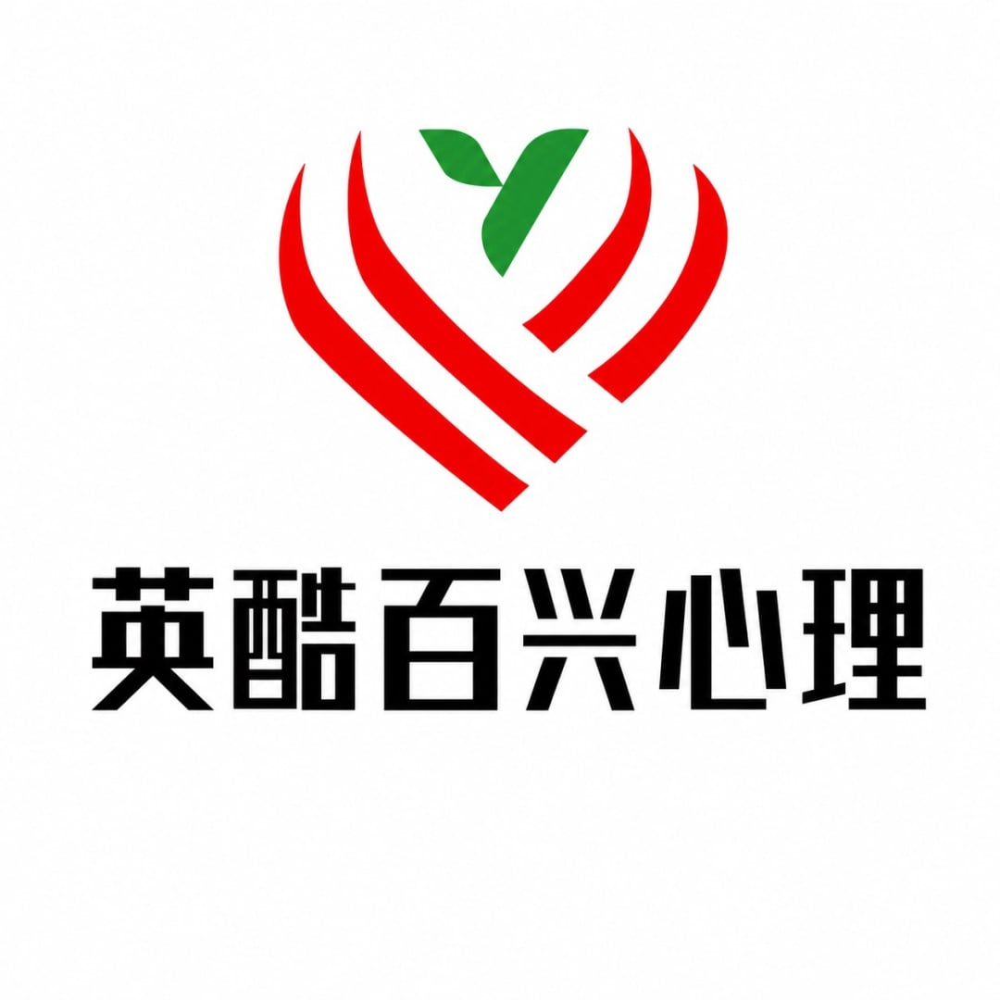

ZHENGZHOU / THERAPY
郑州心能量
米杉在郑州与心能量持续开展本性治疗课程。团队留存的历史记录显示，2017 年 4 月已有课程照片；2019 年的课程继续连接当地的学习者与咨询师。
2017 · 郑州课程2019 · 本性治疗课程
沿时间线了解合作 ↗PEOPLE & PLACES
与各地伙伴共同开展本性治疗、梦工作和情商教育的课程交流。
PARTNERS IN PRACTICE
本性治疗的在华教学，离不开在地机构与学习者的长期参与。郑州、石家庄、东莞、北京的合作伙伴，为课程组织、场地和持续学习提供了支持。
ZHENGZHOU / THERAPY
米杉在郑州与心能量持续开展本性治疗课程。团队留存的历史记录显示，2017 年 4 月已有课程照片；2019 年的课程继续连接当地的学习者与咨询师。
SHIJIAZHUANG / LEARNING
石家庄龅牙兔曾组织米杉本性治疗一至三阶课程。连续的学习阶段，让参与者从入门体验逐渐走向更深入的方法练习。
DONGGUAN / COMMUNITY
向光里主办了 2026 年 8 月二阶之前的东莞米杉课程，让本性治疗的学习在当地逐步展开。8 月二阶课程期间，伙伴们又在向光里·心空间交流学习心得，并与米杉现场对话。

英酷百兴心理北京 · YINGKU BAIXINGMORE TO EXPLORE
从早期高校课程到近年的工作坊，教学历程记录了不同城市的主题与现场。
查看完整教学历程 ↗